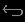
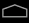

|
|
|
|
|
|
|
|
You can set up a tablet and smartphone with Android operating system version 2.3.3 or later as the Vijeo Design'Air client. To do so:
From Google Play Store, download Schneider Electric’s Vijeo Design'Air application.
Touch the Vijeo Design'Air icon to open the application. In the Vijeo Design'Air main view, a list of detected HMI target machines that can act as Vijeo Design'Air servers is displayed in the Remote Servers. For more information on how to set up a target machine as the server, see Section 23.1.2.1, Setting Up Vijeo Design'Air Server.
In the main view, Remote Servers, long press the target machine you want to connect to. A menu opens with the following options:
Connect: Touch to connect to the target machine.
Add to Favorites: Touch to save the target machine in Favorites for future access. You can also manually add a target machine to the Remote Servers section by using its IP address. For more information, see Connect to Vijeo Design'Air Server using IP Address.
Once the connection is established, you can view the HMI project on your tablet or smartphone and perform single-touch actions. The HMI view on tablets and smartphones can display in landscape and portrait modes.
In the HMI view, you can touch the snapshot icon to make a screen capture of the current view. You can then either save the captured image, or attach it to an e-mail for sending.

The data transfer between the target machine and the tablet or smartphone is neither secured nor encrypted. Use it in a secure network environment or establish a virtual private network (VPN).
Vijeo Design'Air does not support Video Display objects.
The Vijeo Design'Air main view is for detecting, adding, and connecting to Vijeo Design'Air servers based on their IP addresses, and for configuring the connection set up. The following table describes it in more detail:
Item |
Type |
Description |
Favorites |
Content area |
Lists the Vijeo Design'Air servers that you saved for quick access. Long press a server to open the Edit Device dialog box where you can edit the following settings for a Vijeo Design'Air server: Name, IP Address, and Port Number. |
Remote Servers |
Content area |
Lists the Vijeo Design'Air servers that are detected on the network. Touch a server to connect to, or long press to either connect or add it to the Favorites. |
Add |
Action button |
Touch to add a Vijeo Design'Air server to the Favorites by its IP address. The Add Device menu opens where you can enter the following information:
After you fill the above fields, touch OK. The Vijeo Design'Air server is saved to Favorites. |
Refresh |
Action button |
Touch to refresh the Remote Servers list of Vijeo Design'Air servers. |
Settings |
Action button |
Touch to configure the settings of the Vijeo Design'Air client. You can configure the following:
|
Return  |
Action button |
Touch to return to the previous screen. This action disconnects the Vijeo Design'Air client from the server. |
Home  |
Action button |
Touch to return to the tablet or smartphone's main screen. This action disconnects the Vijeo Design'Air client from the server. |
You can connect to a specific Vijeo Design'Air server if you know its IP address. To do so:
On your tablet or smartphone, touch to launch the Vijeo Design'Air application.
In the main view, touch Add to open the Add Device dialog box.
Enter a name for the server (optional), IP address, and port number.
Touch OK to add the server to Favorites.
Touch to connect to the newly added server in the Favorites.
You can edit settings for a Vijeo Design'Air server or remove it from Favorites. To do so:
On your tablet or smartphone, touch to launch the Vijeo Design'Air application.
In the main view, Favorites, long press the server you want to edit or delete.
Touch Delete to remove the server or touch Edit to edit the server's name, IP address, and port number.
The default value for the port number is 6002. You can set the port to any value within the standard port range (1000 to 65535). For more information on changing the default port number, see Section 23.1.2.1 Setting Up Vijeo Design'Air Server or 4.5.1.5 Remote Access.

Do not use a port number that may conflict with other port settings. For more information see Section 5.8.6, Preventing Port Number Conflicts.